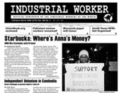

Submitted on Wed, 03/11/2009 - 1:01am
by Joe Tessone
03/03/09- The time is 8:55 AM, 5
minutes before my alarm clock was supposed to sound I am awoken by a
text message which says that Howard Schultz, Starbucks CEO and #1 union
buster, is having a press conference at the Oak and Rush Starbucks
location. I jump out of bed, get dressed, and haul downtown. By the
time I get there, the news cameras are gone. I look around and there he
is sitting behind a merchandise wall in an interview with a few
reporters. I order an Iced Tall Passion Tea… no need for caffeine, I’m
fired up.
My old District Manager is in the cafe
greeting customers and she asks me why I’m there. “Just getting a
drink,” I respond. She then proceeds to make a call on her cell phone,
obviously calling upper management. After I get my beverage, I find a
seat, set my bag down, and I approach him.
Submitted on Tue, 03/03/2009 - 4:27pm

Headlines:
- Starbucks: Where's Anna's Money?
- Workers Occupy Thomson Factory in Poland
- Independent Unionism in Cambodia
Features:
- Unionbook.org reviewed
- Pakistani women workers "unnamed"
- Wisconsin paper mill closes
Download a free
PDF copy of this issue.
Submitted on Tue, 02/17/2009 - 3:24pm
From
NBC New York:
Protesters call for "reinstatement of all fired union baristas"
With 10 or 15 current and former Starbucks colleagues by her side, former barista Sharon Bell stood dressed in a black winter parka holding a sign with the names of six recently fired baristas, including herself, and the words, "Rehire laid off baristas now!!!"
Last week, Bell was fired by Starbucks for what her managers said were issues relating to her tardiness and overall attendance, a charge she and her fellow union members adamantly deny.
Bell said the real reason for her "expresso termination" is recent activity with the Starbucks Workers Union. In a document given out at the protest, the union claims the popular coffee company "has illegally fired three baristas for organizing with the Starbucks Workers Union. Sheanel Simon, Sharon Bell and Neal Linder are excellent baristas and highly respected union members." The Union goes on to note that Simon has since been reinstated, while Bell and Linder remain unemployed.
Submitted on Tue, 02/10/2009 - 7:45pm
By Adam W. - Industrial Worker, January, 2009
Much
has been said in the United States labor movement around the Employee
Free Choice Act (EFCA), a bill many mainstream leaders tout as the
solution to the decline of unions. With the recent election of Barrack
Obama and the Democratic Party holding the majority of seats in both
houses of the US Congress, these same leaders have their hearts set
that their millions of dollars in campaign contributions will pay off
with the passage of the bill.
The
meat of the EFCA would amend existing labor law in the US to allow
unions to gain official recognition in a workplace through a majority
of workers signing authorization cards and avoid the perilous and
employer-dominated election route. Once a union is certified, employers
have to begin sitting down with the union within ten days. If no deal
is reached government mediators can force employers to sign a first
contract, even without the vote of workers. The EFCA also would
drastically increase the penalties companies face for violating workers
rights, such as with firing workers for organizing, which happen at
record rates in the US compared to the rest of the industrialized
world. Workers could receive up to three times the back pay owed and
companies could be fined up to $20,000 for willful or repeated
violations.
What
are members of the IWW to think of this? We are a small but growing
international union with a vision of a completely different world. Not
the vague change promised by both sides in the US presidential
elections, but a world without bosses, where everyday workers are in
the driver’s seat, and where hopes and dreams for a better world can
truly be realized. Will the passage of the EFCA move us closer to our
vision of a new world? There is certainly a great deal of hope in the
change that the EFCA could bring, but I think we need to look more
critically whether substantial change will come even if the EFCA should
pass.
Submitted on Tue, 02/10/2009 - 7:22pm
 Organizing is heating up for the
truckers in the southeastern United States. Though the independent drivers of
North Carolina and Virginia have come a long way this past year, there are still
aspects of the campaign that need attention. Right now there are a handful of
wobblies helping out, including two part time organizers/volunteer coordinators.
For efficiencies sake, we've divided up the current campaign needs into three
different teams, Organizing, Logistics, and Strategy. Many of the tasks can be
completed outside of the North Carolina area or even the United States. If you
can help we ask that you can devote a steady amount of time or a regular task,
whether big or small. We'll have organizers that will work with you. Possible
internships available. For more info about the campaign visit our website at
Truckers.iww.org
Organizing is heating up for the
truckers in the southeastern United States. Though the independent drivers of
North Carolina and Virginia have come a long way this past year, there are still
aspects of the campaign that need attention. Right now there are a handful of
wobblies helping out, including two part time organizers/volunteer coordinators.
For efficiencies sake, we've divided up the current campaign needs into three
different teams, Organizing, Logistics, and Strategy. Many of the tasks can be
completed outside of the North Carolina area or even the United States. If you
can help we ask that you can devote a steady amount of time or a regular task,
whether big or small. We'll have organizers that will work with you. Possible
internships available. For more info about the campaign visit our website at
Truckers.iww.org
Check out our needs
below...Interested? Write to freighttruckers [at] gmail.com or call
Sarah at (847) 693 6261